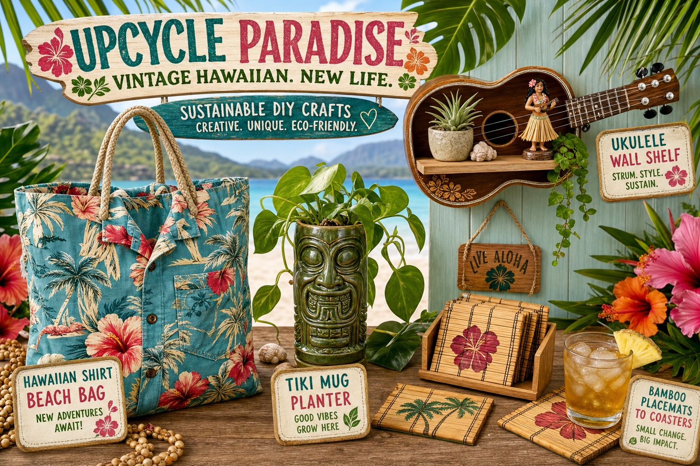

One of the most rewarding aspects of thrift shopping in Hawaii is the opportunity to breathe new life into vintage items that carry the spirit of the islands. Whether you've found a faded muumuu, a set of mid-century ceramics, or a piece of rattan furniture that's seen better days, here are creative ways to transform your thrift finds into something truly special.
Aloha Shirt Transformation
Vintage aloha shirt fabric is extraordinary — the prints, the colors, the weight of the material. If you find a shirt with beautiful fabric but structural damage (torn collar, broken buttons, faded center), don't pass it by. Cut it into throw pillow covers — the distinctive fabric makes incredible pillowcases. A set of mismatched aloha shirt pillows on a neutral couch creates an instantly Hawaiian look that no store-bought pillow can replicate.
Rattan and Wicker Restoration
Rattan and wicker furniture is common in Hawaii thrift stores, often in good structural condition but looking tired and dusty. The restoration process is surprisingly straightforward: clean thoroughly with a stiff brush and mild soap, let dry completely, then apply a light coat of teak oil or linseed oil to revive the natural color and flexibility. A piece that looks beyond saving in the shop can become a statement furniture piece with an afternoon's work.
Vintage Ceramics as Planters
Mid-century Hawaii ceramics — the chunky, earthy bowls and vases that were staples of 1960s island homes — make incredible planters for tropical houseplants. Monstera, pothos, and small ferns look spectacular in vintage ceramic vessels. Drill a small drainage hole if needed, or use the vessel as a cachepot with a nursery container inside. The combination of vintage ceramics and tropical plants is quintessentially Hawaii.
Vintage Travel Poster Framing
Old Hawaii travel posters are some of the most beautiful commercial art ever produced — bold, colorful, and evocative. If you find an unframed vintage poster at a thrift store, don't roll it — take it to a proper framer. A well-preserved 1950s Hawaii tourist commission poster in a simple black frame becomes museum-quality wall art. We price our vintage posters fairly knowing this, but even at $25–$75, the right poster is a steal compared to repro prints.
Muumuu as Home Décor
Vintage muumuu fabric, like aloha shirt fabric, is often extraordinarily beautiful. Muumuus that are too worn to wear can be cut into quilting fabric, used as tablecloths, or turned into beautiful curtain panels for a bedroom or lanai. The large flower prints that were fashionable in the 1970s translate beautifully to home textiles.